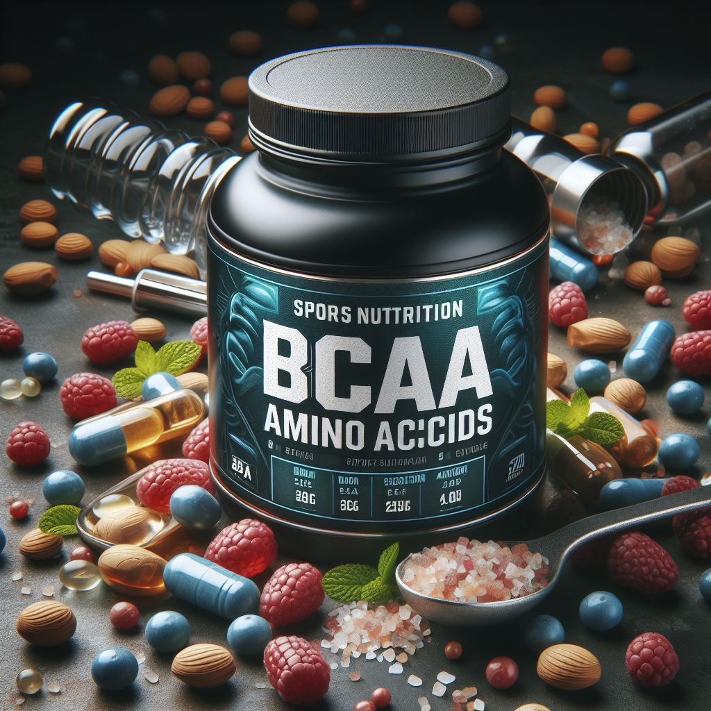

BCAA
BCAA — это комплекс трех незаменимых аминокислот: лейцина, валина и изолейцина. Они входят в состав белка скелетной мускулатуры и являются ключевыми для поддержания мышечной массы и общего здоровья.
1) Польза BCAA:
- Основа для синтеза белка: BCAA играют важную роль в синтезе белка в организме.
- Вспомогательный компонент для синтеза других аминокислот: Они помогают другим аминокислотам образовываться.
- Энергия для мышц: BCAA используются как источник энергии во время физической активности.
- Подавление чувства голода и улучшение сжигания жира: Они могут помочь контролировать аппетит и улучшить обмен веществ.
- Профилактика болезненности и микроповреждений мышц на тренировках: BCAA способствуют восстановлению после физической нагрузки.
- Улучшение результатов в циклических видах спорта: Например, у марафонцев.
2) Когда принимать BCAA:
- Польза BCAA будет существенной, если в питании недостаточно белка. В таком случае они могут быть полезны.
- Удобно использовать BCAA сразу после тренировки, особенно если нет возможности принять протеин сразу.
- Длительные тренировки (более 2 часов) также могут потребовать приема BCAA, например, в виде изотоников.
Важно! Если вы планируете включить BCAA в свой рацион, обязательно проконсультируйтесь с врачом и тренером, чтобы выбрать подходящий продукт и дозировку. Помните, что индивидуальные потребности могут различаться, и важно следовать рекомендациям специалистов.
Теперь вы знаете больше о BCAA! Если вас заинтересовал данный продукт, переходите по кнопке "Просмотр продукции" и подбирайте товар для себя!